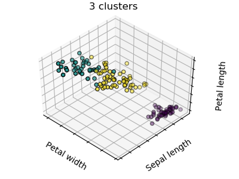
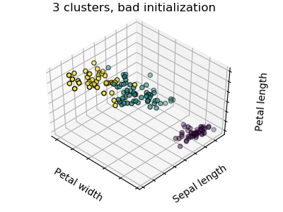
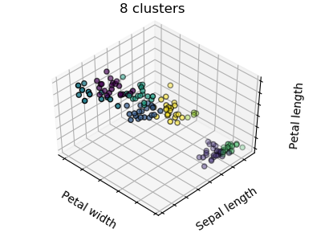
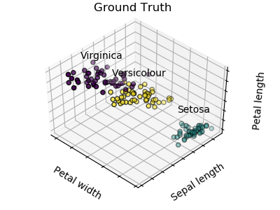
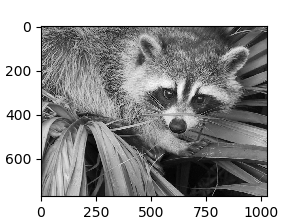
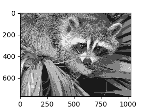
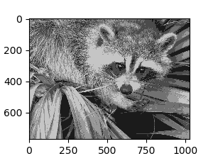
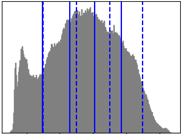
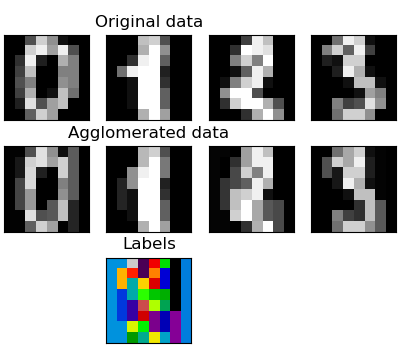

无监督学习: 探索寻找数据的表现方式(representations)¶
聚类: 把观测数据分组¶
聚类算法要解决啥样的问题？
对于 iris 数据集来说，我们知道所有样本有 3 种不同的类型，但是并不知道每一个样本是那种类型： 此时我们可以尝试一个 **clustering task**（聚类任务） 聚类算法: 将样本进行分组，相似的样本被聚在一起， 而不同组别之间的样本是有明显区别的，这样的分组方式就是 clusters（聚类）。
K-means 聚类¶
关于聚类有很多不同的聚类标准和相关算法，其中最简便的算法是 K-均值(K-means)。
>>> from sklearn import cluster, datasets
>>> iris = datasets.load_iris()
>>> X_iris = iris.data
>>> y_iris = iris.target
>>> k_means = cluster.KMeans(n_clusters=3)
>>> k_means.fit(X_iris)
KMeans(algorithm='auto', copy_x=True, init='k-means++', ...
>>> print(k_means.labels_[::10])
[1 1 1 1 1 0 0 0 0 0 2 2 2 2 2]
>>> print(y_iris[::10])
[0 0 0 0 0 1 1 1 1 1 2 2 2 2 2]
Warning
k_means 算法无法保证聚类结果完全绝对真实的反应实际情况。首先，选择正确合适的聚类数量不是一件容易的事情， 第二，该算法对初始值的设置敏感，容易陷入局部最优。尽管 scikit-learn 采取了不同的方式来缓解以上问题， 目前仍没有完美的解决方案。
|  |  |  |
| Bad initialization | 8 clusters | Ground truth |
Don’t over-interpret clustering results
应用案例:向量量化(vector quantization)
一般来说, 聚类方法,特别是 K_means 聚类, 可以作为一种用少量样本来压缩信息的方式。 这种方式有时候被称作 vector quantization 。 例如，K_means 算法可以用于对一张图片进行色调分离
>>> import scipy as sp
>>> try:
... face = sp.face(gray=True)
... except AttributeError:
... from scipy import misc
... face = misc.face(gray=True)
>>> X = face.reshape((-1, 1)) # We need an (n_sample, n_feature) array
>>> k_means = cluster.KMeans(n_clusters=5, n_init=1)
>>> k_means.fit(X)
KMeans(algorithm='auto', copy_x=True, init='k-means++', ...
>>> values = k_means.cluster_centers_.squeeze()
>>> labels = k_means.labels_
>>> face_compressed = np.choose(labels, values)
>>> face_compressed.shape = face.shape
|  |  |  |  |
| Raw image | K-means quantization | Equal bins | Image histogram |
分层聚合聚类法: Ward¶
层次聚类(Hierarchical clustering) 方法是一种旨在构建聚类层次结构的聚类分析方法， 一般来说，实现该算法的大多数方法有以下两种:
- 聚合(Agglomerative) - 自底向上的方法: 初始阶段，每一个样本将自己作为单独的一个簇，聚类的簇以最小 化距离的标准进行迭代聚合。当感兴趣的簇只有少量的样本时，该方法是很合适的。 如果需要聚类的 簇数量很大，该方法比K_means算法的计算效率也更高。
- 分裂(Divisive) -自顶向下的方法: 初始阶段，所有的样本是一个簇，当一个簇下移时，它被迭代的进 行分裂。 当估计聚类簇数量较大的数据时，该算法不仅效率低(由于样本始于一个簇，需要被递归的进行 分裂)， 而且从统计学的角度来讲也是不合适的。
连接约束聚类(Connectivity-constrained clustering)¶
对于逐次聚合聚类(agglomerative clustering)，通过连接图可以指定哪些样本可以被聚合在一个簇。在 scikit-learn 中，图由邻接矩阵来表示， 通常该矩阵是一个稀疏矩阵。这种表示方法是非常有用的，例如在聚类图像时检索连接区域(有时也被称为连接要素):

import matplotlib.pyplot as plt
from skimage.data import coins
from skimage.transform import rescale
from sklearn.feature_extraction.image import grid_to_graph
from sklearn.cluster import AgglomerativeClustering
# #############################################################################
# Generate data
orig_coins = coins()
# Resize it to 20% of the original size to speed up the processing
# Applying a Gaussian filter for smoothing prior to down-scaling
# reduces aliasing artifacts.
smoothened_coins = gaussian_filter(orig_coins, sigma=2)
rescaled_coins = rescale(smoothened_coins, 0.2, mode="reflect")
X = np.reshape(rescaled_coins, (-1, 1))
# #############################################################################
# Define the structure A of the data. Pixels connected to their neighbors.
connectivity = grid_to_graph(*rescaled_coins.shape)
特征聚集(Feature agglomeration)¶
我们已经知道，稀疏性可以缓解特征维度带来的问题，i.e 即与特征数量相比，样本数量太少。 另一个解决该问题的方式是合并相似的维度：**feature agglomeration**（特征聚集）。 该方法可以通过对特征聚类来实现。换 句话说，就是对样本数据转置后进行聚类。
>>> digits = datasets.load_digits()
>>> images = digits.images
>>> X = np.reshape(images, (len(images), -1))
>>> connectivity = grid_to_graph(*images[0].shape)
>>> agglo = cluster.FeatureAgglomeration(connectivity=connectivity,
... n_clusters=32)
>>> agglo.fit(X)
FeatureAgglomeration(affinity='euclidean', compute_full_tree='auto',...
>>> X_reduced = agglo.transform(X)
>>> X_approx = agglo.inverse_transform(X_reduced)
>>> images_approx = np.reshape(X_approx, images.shape)
transform and inverse_transform methods
Some estimators expose a transform method, for instance to reduce
the dimensionality of the dataset.
分解: 从整个信号到其各个分量与负载¶
Components and loadings (成分和载荷)
如果 X 是多维数据，那么我们试图解决的问题是在不同的观察基础上对数据进行重写： 我们希望学习得到载荷 L 和成分 C 使得 X = L C 。提取成分 C 有多种不同的方法。
主成分分析: PCA¶
主成分分析 (PCA) 将能够解释数据信息最大方差的的连续成分提取出来(selects the successive components that explain the maximum variance in the signal)。
上图中样本点的分布在一个方向上是非常平坦的：即三个单变量特征中的任何一个都可以有另外两个特征来表示。 主成分分析法(PCA)可以找到使得数据分布不 flat 的矢量方向(可以反映数据主要信息的特征方向)。
当用PCA来 transform（转换） 数据时，它可以通过在主子空间(principal subspace)上投影来降低数据的维数。
>>> # Create a signal with only 2 useful dimensions
>>> x1 = np.random.normal(size=100)
>>> x2 = np.random.normal(size=100)
>>> x3 = x1 + x2
>>> X = np.c_[x1, x2, x3]
>>> from sklearn import decomposition
>>> pca = decomposition.PCA()
>>> pca.fit(X)
PCA(copy=True, iterated_power='auto', n_components=None, random_state=None,
svd_solver='auto', tol=0.0, whiten=False)
>>> print(pca.explained_variance_)
[ 2.18565811e+00 1.19346747e+00 8.43026679e-32]
>>> # As we can see, only the 2 first components are useful
>>> pca.n_components = 2
>>> X_reduced = pca.fit_transform(X)
>>> X_reduced.shape
(100, 2)
独立分量分析: ICA¶
独立分量分析(ICA) 可以提取数据信息中的独立成分，这些成分载荷的分布包含了最多的独立信息( selects components so that the distribution of their loadings carries a maximum amount of independent information.)。 该方法能够恢复 **non-Gaussian**（非高斯）独立信号:

>>> # Generate sample data
>>> import numpy as np
>>> from scipy import signal
>>> time = np.linspace(0, 10, 2000)
>>> s1 = np.sin(2 * time) # Signal 1 : sinusoidal signal
>>> s2 = np.sign(np.sin(3 * time)) # Signal 2 : square signal
>>> s3 = signal.sawtooth(2 * np.pi * time) # Signal 3: saw tooth signal
>>> S = np.c_[s1, s2, s3]
>>> S += 0.2 * np.random.normal(size=S.shape) # Add noise
>>> S /= S.std(axis=0) # Standardize data
>>> # Mix data
>>> A = np.array([[1, 1, 1], [0.5, 2, 1], [1.5, 1, 2]]) # Mixing matrix
>>> X = np.dot(S, A.T) # Generate observations
>>> # Compute ICA
>>> ica = decomposition.FastICA()
>>> S_ = ica.fit_transform(X) # Get the estimated sources
>>> A_ = ica.mixing_.T
>>> np.allclose(X, np.dot(S_, A_) + ica.mean_)
True